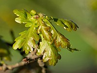
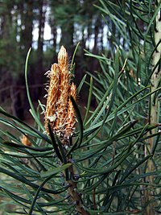
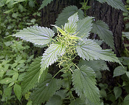

Paprastasis ąžuolas-
Lietuvoje gana dažnas savaime augantis (ir palyginus dažnai sodinamas) medis miškuose, parkuose, skveruose, sodybose, ir labiausiai paplitęs šalies Vidurio žemumoje.
Gydomieji augalai


Ankstyvasis šalpusnis-
Randamas visoje Lietuvos teritorijoje. Mėgsta molingą dirvą su negiliu podirvio vandeniu, ypač vešlus jis šaltiniuotose vietose. Auga pagrioviuose, molinguose šlaituose, upių ir upelių pakrantėse, bergždynuose.

Paprastoji pušis-
Randamas visoje Lietuvos teritorijoje. Mėgsta molingą dirvą su negiliu podirvio vandeniu, ypač vešlus jis šaltiniuotose vietose. Auga pagrioviuose, molinguose šlaituose, upių ir upelių pakrantėse, bergždynuose.

Didžioji dilgėlė-
Jau 200 metų žinoma dilgėlių pašarinė vertė: jomis šeriamų karvių pienas riebesnis, paukščiai sparčiau auga ir riebėja, vištos deda didesnius kiaušinius. Kosmetikoje tinka plaukams stiprinti bei pleiskanų naikinimui.